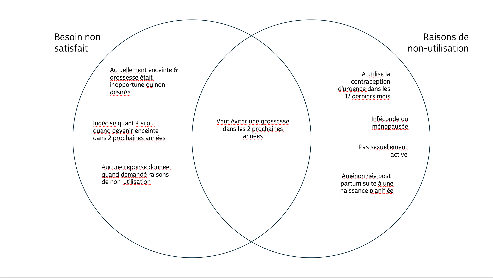
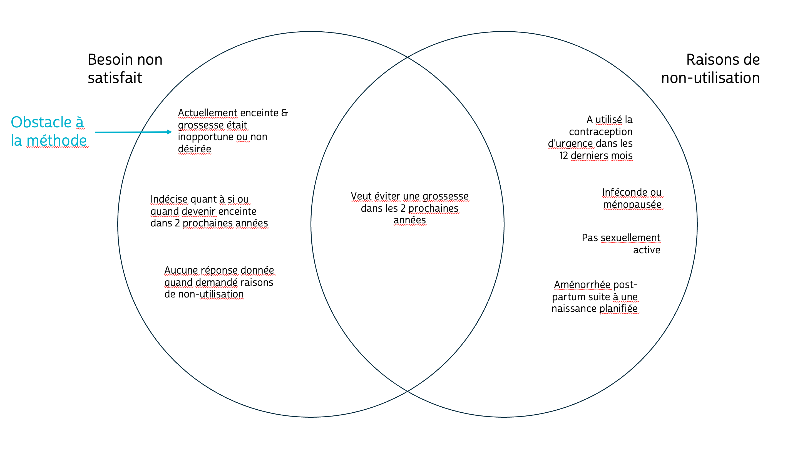
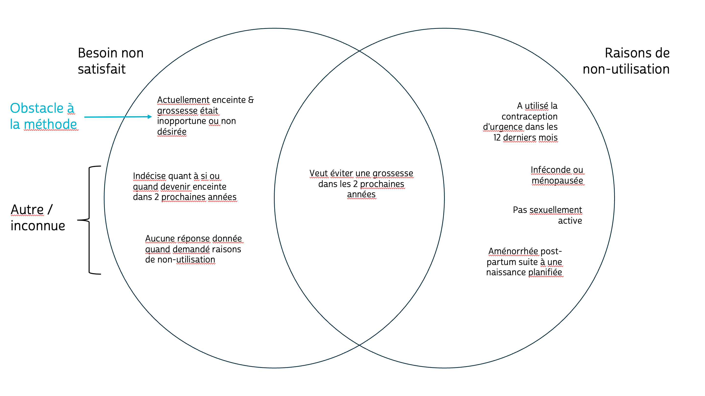
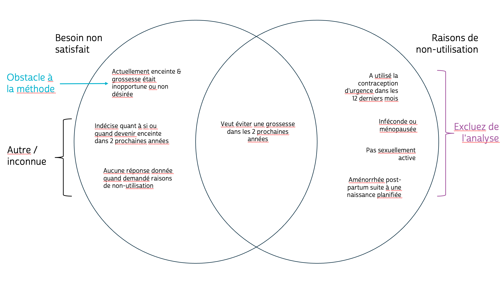
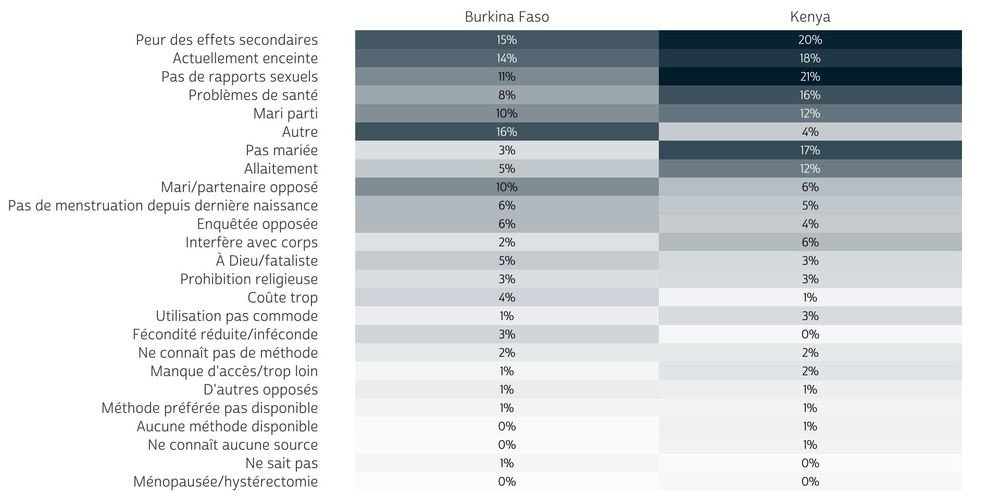

| Échantillon | Phase 1 Collecte des données** | Phase 1 | Phase 2 | Phase 3 |
|---|---|---|---|---|
| Burkina Faso | déc 2019 - mars 2020 | X | X | |
| Kenya | nov 2019 - déc 2019 | X | X | |
| Côte d'Ivoire | sept 2020 - déc 2020 | X | ||
| Inde - Rajasthan | août 2020 - oct 2020 | X | ||
| Nigeria - Kano | déc 2019 - janv 2020 | X | X | |
| Nigeria - Lagos | déc 2019 - janv 2020 | X | X | |
| RDC - Kinshasa | déc 2019 - févr 2020 | X | X | |
| RDC - Kongo central | déc 2019 - févr2020 | X | X | |
| Uganda | sept 2020 - oct 2020 | X |
SESSION DE DONNÉES IPUMS PMA
Les raisons du besoin non satisfait en matière de
planification familiale dans les enquêtes par panel PMA
 Devon Kristiansen - Chef de projet
Devon Kristiansen - Chef de projet
 Matt Gunther - Analyste principal de données
Matt Gunther - Analyste principal de données
LES OBJECTIFS D’AUJOURD’HUI
- Présenter les mesures du besoin non satisfait dans les enquêtes par panel PMA
- Ouvrir un extrait de données IPUMS PMA dans Stata
- Explorer les raisons des femmes d’un besoin non satisfait dans la Phase 1 du panel
- Prédire le besoin non satisfait des femmes dans la Phase 2 du panel
BESOIN NON SATISFAIT
C’EST QUOI, LE BESOIN NON SATISFAIT?
On dit que les femmes qui sont capables de devenir enceintes ont un besoin non satisfait si elles veulent limiter ou espacer les naissances, mais n’utilisent aucune méthode de planification familiale.
Examples:
- Layla veut avoir un enfant un jour, mais n’est pas sûre d’en vouloir un dans l’immédiat. Si ni elle ni son mari n’utilisent une méthode de planification familiale, Layla aurait un besoin non satisfait pour espacer des grossesses.
- Yasmine est actuellement enceinte de son quatrième enfant. Elle avait l’intention d’arrêter d’avoir des enfants après son troisième enfant, alors sa quatrième grossesse indique que Yasmine a un besoin non satisfait de limiter des grossesses.
- A 15 ans, Fatimata n’utilise aucune méthode de planification familiale parce qu’elle n’est pas sexuellement active. Fatimata n’a pas de besoin non satisfait parce qu’elle ne risque pas de tomber enceinte.
LES VARIABLES HARMONISÉES IPUMS PMA
UNMETNEED (BESOIN NON SATISFAIT) explique si chaque enquêtée:
- a un besoin non satisfait pour espacer les naissances
- a un besoin non satisfait de limiter les naissances
- ne risque pas de tomber enceinte
- utilise actuellement la planification familiale pour espacer les naissances
- utilise actuellement la planification familiale pour limiter les naissances
- n’utilise pas la planification familiale avec aucun besoin non satisfait
UNMETYN UNMETYN est binaire:
- Oui
- Non
BESOIN NON SATISFAIT DANS STATA
CONFIGURATION
Notre extrait comprend des données provenant de deux phases de l’étude de panel au Burkina Faso et au Kenya (uniquement les enquêtées).
Nous excluons les femmes qui n’ont répondu qu’à un seul des deux entretiens…
(8,361 observations deleted)BESOIN NON SATISFAIT PAR PAYS À LA PHASE 1
PANELWEIGHT est le poids d’échantillonnage pour les membres du panel (il permet de contrôler la perte de suivi)
EAID_1 et STRATA_1 sont le groupe d’échantillons et les strates utilisés pour sélectionner les ménages à la Phase 1.
Les informations de svyset produisent des pourcentages pondérés ainsi.
Remarque: nous allons changer les cas NIU en .
(2 real changes made, 2 to missing)| Burkina Faso1 | Kenya1 | |
|---|---|---|
| Besoin non satisfait | ||
| Besoin non satisfait pour espacer | 17% | 7.3% |
| Besoin non satisfait de limiter | 3.7% | 4.9% |
| Utilisation pour espacer | 22% | 24% |
| Utilisation pour limiter | 6.6% | 22% |
| Inféconde ou ménopausée | 8.8% | 5.8% |
| Pas sexuellement active | 17% | 27% |
| Aucun besoin non satisfait | 24% | 9.7% |
| Aucune réponse ou manquante | 0.1% | <0.1% |
| "NIU" (non inclus dans dénombrement) | <0.1% | <0.1% |
| Total du besoin non satisfait | ||
| Aucun besoin non satisfait | 79% | 88% |
| Besoin non satisfait | 21% | 12% |
| "NIU" (non inclus dans dénombrement) | <0.1% | <0.1% |
| 1 Pourcentage pondéré | ||
BESOIN NON SATISFAIT PAR PAYS À LA PHASE 2
EAID_1 et STRATA_1 peuvent être utilisés pour estimer les résultats de Phase 2.
Les membres du panel ont été retrouvés dans le même secteur d’étude à la Phase 2.
Ne pas ajuster svyset.
| Burkina Faso1 | Kenya1 | |
|---|---|---|
| Besoin non satisfait | ||
| Besoin non satisfait pour espacer | 14% | 6.6% |
| Besoin non satisfait de limiter | 3.5% | 3.7% |
| Utilisation pour espacer | 26% | 30% |
| Utilisation pour limiter | 7.3% | 23% |
| Inféconde ou ménopausée | 9.7% | 5.0% |
| Pas sexuellement active | 15% | 23% |
| Aucun besoin non satisfait | 24% | 8.9% |
| Aucune réponse ou manquante | 0.1% | 0% |
| Total du besoin non satisfait | ||
| Aucun besoin non satisfait | 82% | 90% |
| Besoin non satisfait | 18% | 10% |
| 1 Pourcentage pondéré | ||
QUESTION DE RECHERCHE
Dans quelle mesure pouvons-nous prédire le besoin non satisfait à la Phase 2 si nous savons seulement si oui ou non une femme avait un besoin non satisfait à la Phase 1?
RÉGRESSION LOGISTIQUE
| Burkina Faso1 | 95% CI2 | Kenya1 | 95% CI2 | |
|---|---|---|---|---|
| (Constant) | 0.14*** | 0.12, 0.17 | 0.09*** | 0.08, 0.10 |
| Phase 1 besoin non satisfait | 4.22*** | 3.47, 5.14 | 3.94*** | 3.23, 4.80 |
| 1 *p<0.05; **p<0.01; ***p<0.001 | ||||
| 2 Intervalle de confiance | ||||
RÉGRESSION LOGISTIQUE
Burkina Faso
Kenya
Le besoin non satisfait à la Phase 1 est un prédicteur important du besoin non satisfait à la Phase 2.
Les femmes ayant un besoin non satisfait à la Phase 1 ont à peu près quatre fois plus de chances d’avoir un besoin non satisfait à la Phase 2 par rapport aux femmes qui n’en avaient pas.
| Burkina Faso1 | 95% CI2 | Kenya1 | 95% CI2 | |
|---|---|---|---|---|
| (Constant) | 0.14*** | 0.12, 0.17 | 0.09*** | 0.08, 0.10 |
| Phase 1 besoin non satisfait | 4.22*** | 3.47, 5.14 | 3.94*** | 3.23, 4.80 |
| 1 *p<0.05; **p<0.01; ***p<0.001 | ||||
| 2 Intervalle de confiance | ||||
RAISONS POUR UN BESOIN NON SATISFAIT
Si nous savons pourquoi une femme avait un besoin non satisfait à la Phase 1, cela améliore-t-il notre capacité à prédire son besoin non satisfait à la Phase 2?
POURQUOI LES RAISONS SONT-ELLES IMPORTANTES?
À lui seul, un besoin non satisfait n’explique pas l’accès ou le désir d’utiliser la planification familiale.
Senderowicz and Maloney (2022) suggèrent la division du besoin non satisfait en facteurs liés à l’offre et à la demande.
Le besoin non satisfait lié à la demande représente les femmes qui ne choisissent pas d’utiliser la contraception, non pas parce que la contraception est inaccessible, mais parce qu’elles ne voient pas la nécessité de l’avoir dans leurs propres vies.
Machiyama et al. (2017) proposent un cadre causal en 5 parties pour les besoins non satisfaits.

RAISONS ETUDIÉES PAR PMA
Pouvez-vous me dire pourquoi vous n'utilisez
pas une méthode pour éviter la grossesse?
[] Pas mariée[] Rapports sexuels peu fréquents/pas de rapports sexuels[] Ménopausée/hystérectomie[] Fécondité réduite/inféconde[] Pas de règles depuis dernière naissance[] Allaitement[] Mari parti pour plusieurs jours[] Dans les mains de Dieu/fataliste[] Enquêtée opposée[] Mari/partenaire opposé[] D'autres opposés[] Prohibition religieuse[] Ne connaît aucune méthode[] Ne connaît aucune source[] Peur des effets secondaires[] Problèmes de santé[] Manque d'accès/trop loin[] Coûte trop cher[] Méthode préférée non disponible[] Aucune méthode disponible[] Peu pratique à utiliser[] Interfère avec les processus du corps[] Autre[] Ne sait pas[] Pas de réponseRecodage
RAISONS ETUDIÉES PAR PMA
Pouvez-vous me dire pourquoi vous n'utilisez
pas une méthode pour éviter la grossesse?
[] Pas mariée[] Rapports sexuels peu fréquents/pas de rapports sexuels[] Ménopausée/hystérectomie[] Fécondité réduite/inféconde[] Pas de règles depuis dernière naissance[] Allaitement[] Mari parti pour plusieurs jours[] Dans les mains de Dieu/fataliste[] Enquêtée opposée[] Mari/partenaire opposé[] D'autres opposés[] Prohibition religieuse[] Ne connaît aucune méthode[] Ne connaît aucune source[] Peur des effets secondaires[] Problèmes de santé[] Manque d'accès/trop loin[] Coûte trop cher[] Méthode préférée non disponible[] Aucune méthode disponible[] Peu pratique à utiliser[] Interfère avec les processus du corps[] Autre[] Ne sait pas[] Pas de réponseRecodage
Faible risque de grossesse
RAISONS ETUDIÉES PAR PMA
Pouvez-vous me dire pourquoi vous n'utilisez
pas une méthode pour éviter la grossesse?
[] Pas mariée[] Rapports sexuels peu fréquents/pas de rapports sexuels[] Ménopausée/hystérectomie[] Fécondité réduite/inféconde[] Pas de règles depuis dernière naissance[] Allaitement[] Mari parti pour plusieurs jours[] Dans les mains de Dieu/fataliste[] Enquêtée opposée[] Mari/partenaire opposé[] D'autres opposés[] Prohibition religieuse[] Ne connaît aucune méthode[] Ne connaît aucune source[] Peur des effets secondaires[] Problèmes de santé[] Manque d'accès/trop loin[] Coûte trop cher[] Méthode préférée non disponible[] Aucune méthode disponible[] Peu pratique à utiliser[] Interfère avec les processus du corps[] Autre[] Ne sait pas[] Pas de réponseRecodage
Faible risque de grossesse
Opposition ou interdiction
RAISONS ETUDIÉES PAR PMA
Pouvez-vous me dire pourquoi vous n'utilisez
pas une méthode pour éviter la grossesse?
[] Pas mariée[] Rapports sexuels peu fréquents/pas de rapports sexuels[] Ménopausée/hystérectomie[] Fécondité réduite/inféconde[] Pas de règles depuis dernière naissance[] Allaitement[] Mari parti pour plusieurs jours[] Dans les mains de Dieu/fataliste[] Enquêtée opposée[] Mari/partenaire opposé[] D'autres opposés[] Prohibition religieuse[] Ne connaît aucune méthode[] Ne connaît aucune source[] Peur des effets secondaires[] Problèmes de santé[] Manque d'accès/trop loin[] Coûte trop cher[] Méthode préférée non disponible[] Aucune méthode disponible[] Peu pratique à utiliser[] Interfère avec les processus du corps[] Autre[] Ne sait pas[] Pas de réponseRecodage
Faible risque de grossesse
Opposition ou interdiction
Accès à la méthode
Autre / Inconnue
QUI A DONNÉ DES RAISONS?
La plupart - mais pas toutes - des femmes ayant un besoin non satisfait ont été invitées à donner les raisons de leur non-utilisation.
La plupart - mais pas toutes - des femmes qui ont donné des raisons de non-utilisation ont aussi un besoin non satisfait.
QUI A DONNÉ DES RAISONS?
La plupart - mais pas toutes - des femmes ayant un besoin non satisfait ont été invitées à donner les raisons de leur non-utilisation.
La plupart - mais pas toutes - des femmes qui ont donné des raisons de non-utilisation ont aussi un besoin non satisfait.
QUI A DONNÉ DES RAISONS?
La plupart - mais pas toutes - des femmes ayant un besoin non satisfait ont été invitées à donner les raisons de leur non-utilisation.
La plupart - mais pas toutes - des femmes qui ont donné des raisons de non-utilisation ont aussi un besoin non satisfait.
QUI A DONNÉ DES RAISONS?
La plupart - mais pas toutes - des femmes ayant un besoin non satisfait ont été invitées à donner les raisons de leur non-utilisation.
La plupart - mais pas toutes - des femmes qui ont donné des raisons de non-utilisation ont aussi un besoin non satisfait.
POPULARITÉ DES RAISONS POUR UN BESOIN NON SATISFAIT EN PHASE 1
RECODAGE
foreach var of varlist fpynot* {
replace `var' = 0 if unmetyn_1 == 1 & `var' == 99
recode `var' (0=0) (1=1) (else=0)
}
replace pregnant_1 = 0 if pregnant_1 > 90
egen fpyopposed = rowmax(fpynotrelig_1 fpynotoppf_1 fpynotfate_1 ///
fpynotopph_1 fpynotoppo_1 fpynotsidef_1 fpynotsdhlth_1 ///
fpynotconv_1 fpynotbody_1)
replace fpyopposed = 0 if unmetyn_1 != 1
egen fpymethod = rowmax(fpynotfar_1 fpynotcost_1 fpynotkno_1 ///
fpynotsrc_1 fpynotavail_1 fpynotavailp_1 pregnant_1)
replace fpymethod = 0 if unmetyn_1 != 1
egen fpylowrisk = rowmax(fpynotbstfd_1 fpynothsbaway_1 ///
fpynotmeno_1 fpynotamen_1 fpynotnosex_1 ///
fpynotmar_1 fpynotinf_1)
replace fpylowrisk = 0 if unmetyn_1 != 1
gen fpyother = 0
replace fpyother = 1 if unmetyn_1 == 1 & fpyopposed !=1 & ///
fpymethod !=1 & fpylowrisk !=1
* Check results
tabstat fpyopposed fpymethod fpylowrisk fpyother ///
if unmetyn_1 == 1 [weight=panelweight], by(country)| Burkina Faso1 | Kenya1 | |
|---|---|---|
| Opposition ou prohibition | 38% | 38% |
| Accès à la méthode | 20% | 24% |
| Peu de risques de tomber enceinte | 32% | 46% |
| Autre / Raison inconnue | 19% | 7.9% |
| 1 Pourcentage pondéré; Les femmes pouvaient donner plus qu'une seule raison | ||
RÉGRESSION LOGISTIQUE
| Burkina Faso1 | 95% CI2 | Kenya1 | 95% CI2 | |
|---|---|---|---|---|
| (Constant) | 0.14*** | 0.12, 0.17 | 0.09*** | 0.08, 0.10 |
| Opposition ou prohibition | 1.55* | 1.10, 2.19 | 1.77* | 1.14, 2.73 |
| Accès à la méthode | 1.88 | 0.99, 3.59 | 0.84 | 0.48, 1.45 |
| Peu de risques de tomber enceinte | 1.44 | 0.91, 2.29 | 0.77 | 0.52, 1.14 |
| Phase 1 besoin non satisfait | 2.78*** | 1.90, 4.06 | 3.61*** | 2.34, 5.58 |
| 1 *p<0.05; **p<0.01; ***p<0.001 | ||||
| 2 CI = Confidence Interval | ||||
RÉGRESSION LOGISTIQUE
Burkina Faso
Kenya
Comparées aux femmes qui n’ont donné aucune raison, les femmes qui étaient opposées à l’utilisation de la planification familiale étaient significativement plus susceptibles d’avoir un besoin non satisfait à la Phase 2.
Les femmes avec des problèmes d’accès à la méthode / les femmes qui ne courraient pas de risque de devenir enceintes: c’est moins évident!
| Burkina Faso1 | 95% CI2 | Kenya1 | 95% CI2 | |
|---|---|---|---|---|
| (Constant) | 0.14*** | 0.12, 0.17 | 0.09*** | 0.08, 0.10 |
| Opposition ou prohibition | 1.55* | 1.10, 2.19 | 1.77* | 1.14, 2.73 |
| Accès à la méthode | 1.88 | 0.99, 3.59 | 0.84 | 0.48, 1.45 |
| Peu de risques de tomber enceinte | 1.44 | 0.91, 2.29 | 0.77 | 0.52, 1.14 |
| Phase 1 besoin non satisfait | 2.78*** | 1.90, 4.06 | 3.61*** | 2.34, 5.58 |
| 1 *p<0.05; **p<0.01; ***p<0.001 | ||||
| 2 CI = Confidence Interval | ||||
PROCHAINES ÉTAPES
Quels contrôles pourrait-on ajouter à notre modèle?
Comparaison avec les résultats d’autres enquêtes IPUMS Global Health
- IPUMS DHS: Why Not Use Family Planning groupe variable; UNMETNEED, UNMETNEED2, and UNMETNEED3,
- IPUMS MICS: bientôt disponible!
NOUVEAUTÉS CHEZ IPUMS
RÉFÉRENCES
Machiyama, Kazuyo, John B Casterline, Joyce N Mumah, Fauzia Akhter Huda, Francis Obare, George Odwe, Caroline W Kabiru, Sharifa Yeasmin, and John Cleland. 2017. “Reasons for Unmet Need for Family Planning, with Attention to the Measurement of Fertility Preferences: Protocol for a Multi-Site Cohort Study.” Reproductive Health 14 (1): 23. http://dx.doi.org/10.1186/s12978-016-0268-z.
Senderowicz, Leigh, and Nicole Maloney. 2022. “Supply-Side Versus Demand-Side Unmet Need: Implications for Family Planning Programs.” Population and Development Review 48 (3): 689–722. https://onlinelibrary.wiley.com/doi/10.1111/padr.12478.
COMMENT MESURE-T-ON LE BESOIN NON SATISFAIT ?
PMA utilise plusieurs questions d’enquête différentes pour déterminer quelles femmes: